1. РАСЧЁТ ЛИНЕЙНЫХ ЦЕПЕЙ ПРИ ДЕЙСТВИИ ПЕРИОДИЧЕСКОЙ НЕСИНУСОИДАЛЬНОЙ ЭДС
Периодическими несинусоидальными электродвижущими силами, напряжениями и токами называют ЭДС, напряжения и токи, изменяющиеся во времени по периодическому несинусоидальному закону с периодом Т. В общем случае значение, например, ЭДС е(t) в произвольный момент времени t совпадает со значениями в моменты t + kT, т. е.е(t) = е(t + kT), k = 0, ±1, ±2, …
В качестве примера на рис. 16.1 изображены периодические несинусоидальные ЭДС е(t) с амплитудой Еm и с периодом повторения Т: прямоугольные импульсы (а), импульсы выпрямленной синусоиды (б), треугольные импульсы (в) и меандр (г).

Периодические несинусоидальные напряжения и токи в цепи возникают как при действии источника напряжения с несинусоидальной ЭДС, так и при действии синусоидальной ЭДС, но если один или несколько элементов цепи нелинейные. В данной работе рассматриваются методика расчёта и особенности работы линейной электрической цепи при воздействии на неё несинусоидальной ЭДС источника питания.
Анализ схем цепей при периодической несинусоидальной ЭДС е(t) основан на представлении этой ЭДС тригонометрическим или комплексным рядом Фурье с последующим применением метода наложения. Напряжения и токи ветвей схемы определяют от каждой составляющей (гармоники) ряда Фурье в отдельности. При этом источник ЭДС е(t) рассматривают (в общем случае) как последовательное соединение источника постоянной ЭДС е0 и источников синусоидальных ЭДС еk(t), т. е.
е(t) = е0 + е1(t) + е2(t) + е3(t) + … 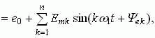
где 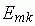 и 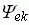 - амплитуда и начальная фаза k-й гармоники ЭДС е(t).
При расчёте токов (напряжений) ветвей от постоянной составляющей е0 индуктивные элементы Lk схемы замыкают накоротко, а ветви с ёмкостными элементами Сk размыкают. Токи (напряжения) ветвей от синусоидальных источников еk(t) находят комплексным методом, определяя комплексные сопротивления ветвей для каждой гармоники:
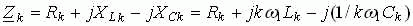
где k - номер гармоники ЭДС е(t); ω1 = 2π/Т - угловая частота основной гармоники периодической несинусоидальной ЭДС с периодом Т.
Выражение для мгновенного значения тока ветви записывают после расчёта всех его комплексных амплитуд 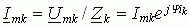:
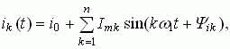
где 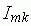 и 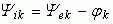- амплитуда и начальная фаза k-й гармоники тока ветви; 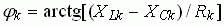 - угол сдвига фаз между напряжением 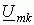 и током 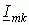 ветви при воздействии k-й гармоники ЭДС е(t).